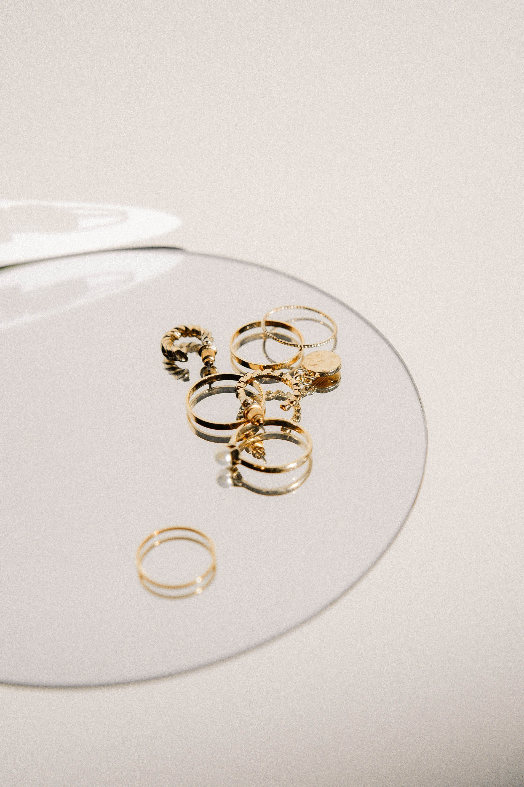

01
Helrenovering & service
Fullständig isärtagning av verket, ultraljudsrengöring, ny smörjning och finjustering av gångnoggrannheten. Rekommenderas vart 4–6:e år för mekaniska ur.
- Rengöring och kontroll av alla delar
- Ny smörjning och finjustering
- Mätning av gång och täthet
